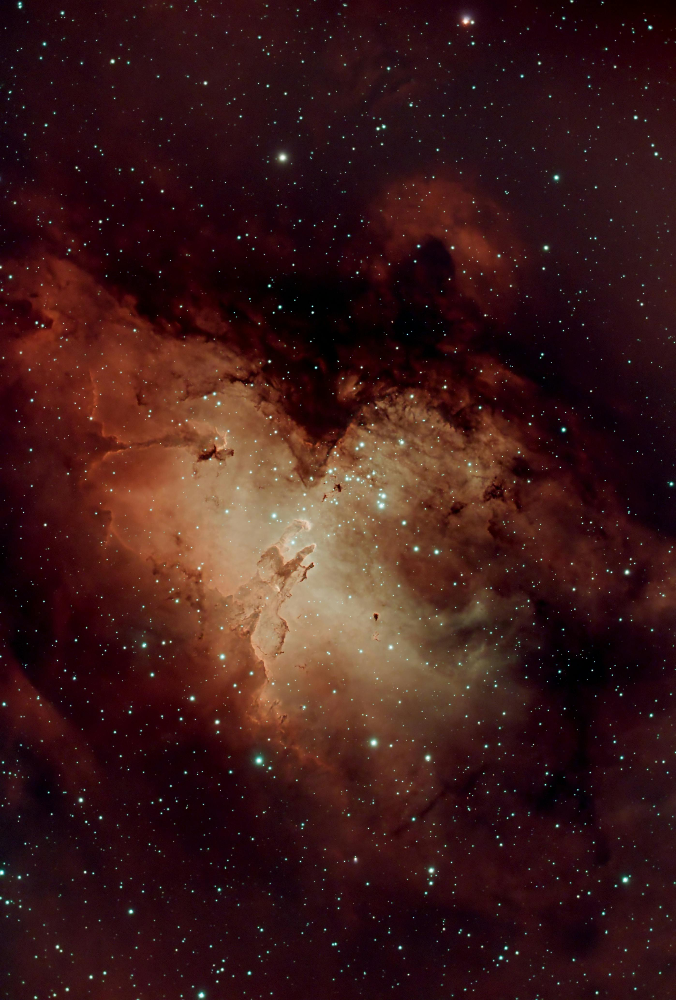
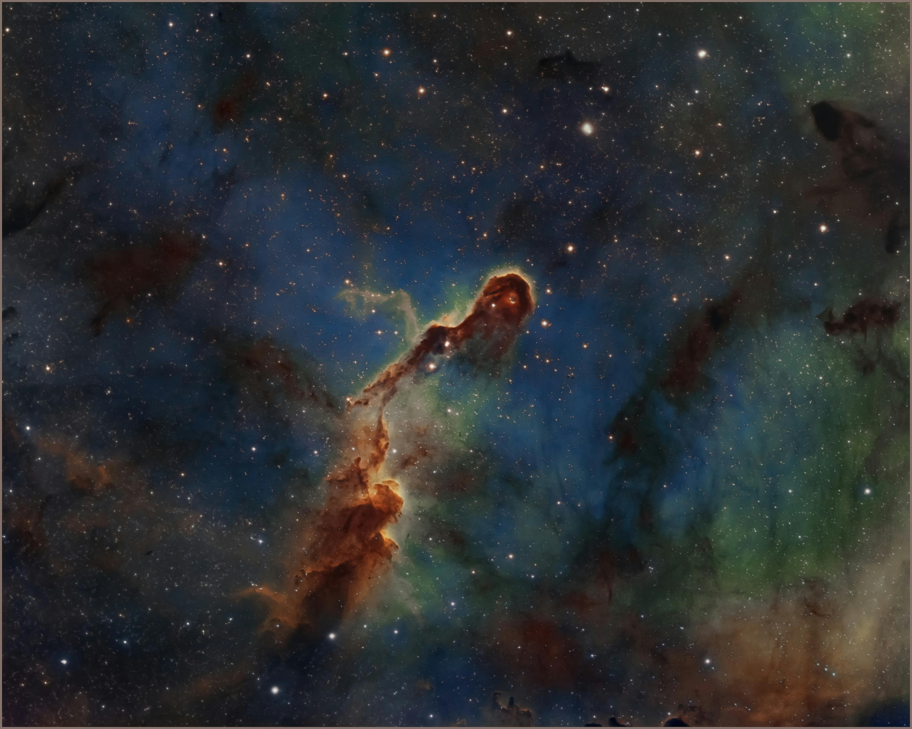
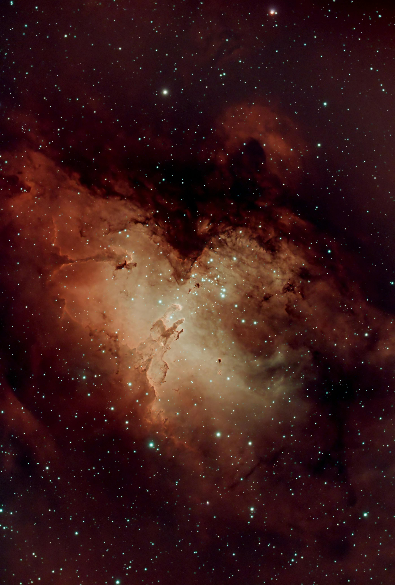
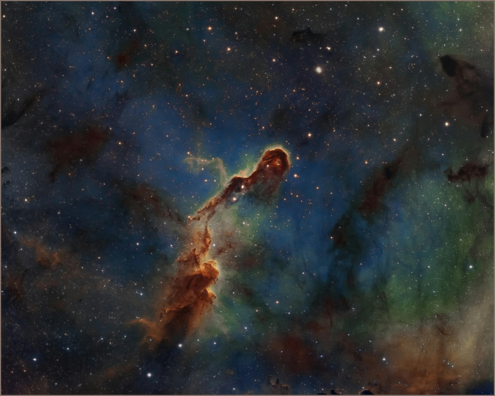

In SpotLight
 



The Rosette Nebula
The Rosette Nebula stands as a majestic cosmic bloom, its radiant colors displaying the beauty and complexity of stellar birth. Located about 5,200 light-years away from Earth, this expansive nebula is a rich tapestry of hydrogen, oxygen, and sulfur gases, all woven together in hues of blue, orange, and green. This vibrant molecular cloud is home to new stars, which light up the surrounding gas, creating a breathtaking visual masterpiece. A stellar nursery at its finest, the Rosette Nebula is a symbol of the universe's ceaseless creativity and is a favorite subject of both astronomers and stargazers alike.
The Hubble Space Telescope
Floating above Earth, the Hubble Space Telescope has become humanity's eye into the universe. Launched in 1990, it has revolutionized our understanding of space with crystal-clear images of galaxies, nebulae, and other celestial phenomena. This iconic shot captures the Hubble in orbit, its massive golden solar arrays gleaming against the backdrop of our planet. The telescope’s cutting-edge technology continues to expand the horizons of our cosmic knowledge, capturing images that have changed how we see and think about the universe.
Pillars of Creation in the Eagle Nebula
The iconic "Pillars of Creation" within the Eagle Nebula presents a hauntingly beautiful spectacle of star formation. Located 6,500 light-years away, these towering columns of interstellar gas and dust are incubators for new stars. The deep reds and dark shadows give way to clusters of bright stars at the peaks, signifying the birth of new celestial bodies. Captured in sharp detail by the Hubble Space Telescope, this image stands as a reminder of the grandeur and dynamic processes that continuously shape our universe.
Elephant's Trunk Nebula: A Stellar Nursery
This captivating image showcases the Elephant's Trunk Nebula, a cosmic cloud where new stars are born. The nebula's distinctive shape, resembling an elephant's trunk, is sculpted by powerful stellar winds and radiation. The vibrant colors highlight the various elements within, making it a breathtaking sight. This celestial wonder is a testament to the universe's constant cycle of creation and evolution.
A Journey Through Time: The Hubble Legacy Field Video Reveals 13.3 Billion Years of Galaxy Evolution
This video showcases the largest and most comprehensive image of galaxies ever created, compiled from 16 years of Hubble Space Telescope observations. The deep-sky mosaic consists of nearly 7,500 exposures, capturing 265,000 galaxies that stretch back over 13.3 billion years, to just 500 million years after the Big Bang. Watch as the video begins with a zoomed-in view of thousands of galaxies in the Hubble Ultra Deep Field, then slowly expands to reveal the entire Hubble Legacy Field. The faintest galaxies are ten-billion times dimmer than what the human eye can see. This sweeping portrait chronicles the universe's evolution, showing how galaxies have grown and changed over time.